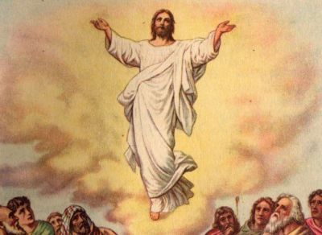

HODIE /  Ascensione del Signore / La missione della Chiesa è presieduta da Gesù Cristo risorto, salito al cielo e intronizzato Signore alla destra del Padre. L’ascensione e l’invio degli apostoli sono inseparabili. Tra gli undici (Giuda il traditore ha seguito un altro cammino), inviati da Gesù e beneficiari della sua promessa fedele e potente, si trovano anche i successori degli apostoli e la Chiesa intera. Gesù ci invia, ci accompagna e ci dà la forza. Noi non siamo dei volontari spontanei, ma degli inviati. Appoggiandoci su Gesù Cristo vincitore della morte, possiamo obbedire quotidianamente al suo ordine di missione nella serenità e nella speranza. Gli apostoli sono i messaggeri di una Parola che tocca l’uomo nel centro della sua vita. Il Vangelo, affidato alla Chiesa, ci dà una risposta definitiva: se crediamo, siamo salvati, se rifiutiamo di credere o alziamo le spalle, siamo perduti. Attraverso la fede, che è il sì dato dall’uomo a Dio, noi riceviamo la vita. Il Signore conferma la predicazione degli apostoli con molti segni; e segni accompagnano anche i credenti. Attraverso questi segni, diversi e coestesi alla missione della Chiesa, Dio vuole garantire la sua azione in coloro che egli ha inviato e invita tutti gli uomini ad abbandonare ciò che è visibile e quindi attraente per il mistero della salvezza.
Ascensione del Signore / La missione della Chiesa è presieduta da Gesù Cristo risorto, salito al cielo e intronizzato Signore alla destra del Padre. L’ascensione e l’invio degli apostoli sono inseparabili. Tra gli undici (Giuda il traditore ha seguito un altro cammino), inviati da Gesù e beneficiari della sua promessa fedele e potente, si trovano anche i successori degli apostoli e la Chiesa intera. Gesù ci invia, ci accompagna e ci dà la forza. Noi non siamo dei volontari spontanei, ma degli inviati. Appoggiandoci su Gesù Cristo vincitore della morte, possiamo obbedire quotidianamente al suo ordine di missione nella serenità e nella speranza. Gli apostoli sono i messaggeri di una Parola che tocca l’uomo nel centro della sua vita. Il Vangelo, affidato alla Chiesa, ci dà una risposta definitiva: se crediamo, siamo salvati, se rifiutiamo di credere o alziamo le spalle, siamo perduti. Attraverso la fede, che è il sì dato dall’uomo a Dio, noi riceviamo la vita. Il Signore conferma la predicazione degli apostoli con molti segni; e segni accompagnano anche i credenti. Attraverso questi segni, diversi e coestesi alla missione della Chiesa, Dio vuole garantire la sua azione in coloro che egli ha inviato e invita tutti gli uomini ad abbandonare ciò che è visibile e quindi attraente per il mistero della salvezza.
ANTIFONA / Uomini di Galilea, perché state a guardare il cielo? Come l’avete visto salire al cielo, così il Signore verrà. Alleluia. (At 1,11)
CONFITEOR / Confesso a Dio onnipotente e a voi, fratelli e sorelle, che ho molto peccato in pensieri, parole, opere e omissioni, per mia colpa, mia colpa, mia grandissima colpa. E supplico la beata sempre vergine Maria, gli angeli, i santi e voi, fratelli e sorelle, di pregare per me il Signore Dio nostro. Dio onnipotente abbia misericordia di noi, perdoni i nostri peccati e ci conduca alla vita eterna. Signore Pietà, Cristo pietà.
GLORIA / Gloria a Dio nell'alto dei cieli e pace in terra agli uomini di buona volontà. Noi ti lodiamo, ti benediciamo, ti adoriamo, ti glorifichiamo, ti rendiamo grazie per la tua gloria immensa, Signore Dio, Re del cielo, Dio Padre onnipotente. Signore, figlio unigenito, Gesù Cristo, Signore Dio, Agnello di Dio, Figlio del Padre, tu che togli i peccati dal mondo abbi pietà di noi; tu che togli i peccati dal mondo, accogli la nostra supplica; tu che siedi alla destra del Padre, abbi pietà di noi. Perché tu solo il Santo, tu solo il Signore, tu solo l'Altissimo, Gesù Cristo, con lo Spirito Santo: nella gloria di Dio Padre. Amen.
COLLETTA / Esulti di santa gioia la tua Chiesa, o Padre, per il mistero che celebra in questa liturgia di lode, poiché nel tuo Figlio asceso al cielo la nostra umanità è innalzata accanto a te, e noi, membra del suo corpo, viviamo nella speranza di raggiungere Cristo, nostro capo, nella gloria. Egli è Dio e vive e regna con te, nell’unità dello Spirito Santo, per tutti i secoli dei secoli. ♦ Dio onnipotente, concedi che i nostri cuori dimorino nei cieli, dove noi crediamo che oggi è asceso il tuo Unigenito, nostro redentore. Egli è Dio, e vive e regna con te, nell’unità dello Spirito Santo, per tutti i secoli dei secoli.
LETTURA1 / Fu elevato in alto sotto i loro occhi / Dagli Atti degli Apostoli (At 1,1-11) / Nel primo racconto, o Teòfilo, ho trattato di tutto quello che Gesù fece e insegnò dagli inizi fino al giorno in cui fu assunto in cielo, dopo aver dato disposizioni agli apostoli che si era scelti per mezzo dello Spirito Santo. Egli si mostrò a essi vivo, dopo la sua passione, con molte prove, durante quaranta giorni, apparendo loro e parlando delle cose riguardanti il regno di Dio. Mentre si trovava a tavola con essi, ordinò loro di non allontanarsi da Gerusalemme, ma di attendere l'adempimento della promessa del Padre, «quella - disse - che voi avete udito da me: Giovanni battezzò con acqua, voi invece, tra non molti giorni, sarete battezzati in Spirito Santo». Quelli dunque che erano con lui gli domandavano: «Signore, è questo il tempo nel quale ricostituirai il regno per Israele?». Ma egli rispose: «Non spetta a voi conoscere tempi o momenti che il Padre ha riservato al suo potere, ma riceverete la forza dallo Spirito Santo che scenderà su di voi, e di me sarete testimoni a Gerusalemme, in tutta la Giudea e la Samarìa e fino ai confini della terra». Detto questo, mentre lo guardavano, fu elevato in alto e una nube lo sottrasse ai loro occhi. Essi stavano fissando il cielo mentre egli se ne andava, quand'ecco due uomini in bianche vesti si presentarono a loro e dissero: «Uomini di Galilea, perché state a guardare il cielo? Questo Gesù, che di mezzo a voi è stato assunto in cielo, verrà allo stesso modo in cui l'avete visto andare in cielo». / Parola di Dio.
PSALMUS / (Sal 46) Ascende il Signore tra canti di gioia / Popoli tutti, battete le mani! Acclamate Dio con grida di gioia, perché terribile è il Signore, l'Altissimo, grande re su tutta la terra. / Ascende Dio tra le acclamazioni, il Signore al suono di tromba. Cantate inni a Dio, cantate inni, cantate inni al nostro re, cantate inni. / Perché Dio è re di tutta la terra, cantate inni con arte. Dio regna sulle genti, Dio siede sul suo trono santo.
LETTURA2 / Raggiungere la misura della pienezza di Cristo / Dalla lettera di san Paolo apostolo agli Efesìni (Ef 4,1-13) / Fratelli, io, prigioniero a motivo del Signore, vi esorto: comportatevi in maniera degna della chiamata che avete ricevuto, con ogni umiltà, dolcezza e magnanimità, sopportandovi a vicenda nell'amore, avendo a cuore di conservare l'unità dello spirito per mezzo del vincolo della pace. Un solo corpo e un solo spirito, come una sola è la speranza alla quale siete stati chiamati, quella della vostra vocazione; un solo Signore, una sola fede, un solo battesimo. Un solo Dio e Padre di tutti, che è al di sopra di tutti, opera per mezzo di tutti ed è presente in tutti. A ciascuno di noi, tuttavia, è stata data la grazia secondo la misura del dono di Cristo. Per questo è detto: «Asceso in alto, ha portato con sé prigionieri, ha distribuito doni agli uomini». Ma cosa significa che ascese, se non che prima era disceso quaggiù sulla terra? Colui che discese è lo stesso che anche ascese al di sopra di tutti i cieli, per essere pienezza di tutte le cose. Ed egli ha dato ad alcuni di essere apostoli, ad altri di essere profeti, ad altri ancora di essere evangelisti, ad altri di essere pastori e maestri, per preparare i fratelli a compiere il ministero, allo scopo di edificare il corpo di Cristo, finché arriviamo tutti all'unità della fede e della conoscenza del Figlio di Dio, fino all'uomo perfetto, fino a raggiungere la misura della pienezza di Cristo. / Parola di Dio.
ACCLAMATIO / Alleluia, Alleluia / Andate e fate discepoli tutti i popoli, dice il Signore. Ecco, io sono con voi tutti i giorni, fino alla fine del mondo. (Mt 28,19.20) / Alleluia.
VANGELO / Il Signore fu elevato in cielo e sedette alla destra di Dio / Dal Vangelo secondo Marco (Mc 16,15-20) / In quel tempo, [Gesù apparve agli Undici] e disse loro: «Andate in tutto il mondo e proclamate il Vangelo a ogni creatura. Chi crederà e sarà battezzato sarà salvato, ma chi non crederà sarà condannato. Questi saranno i segni che accompagneranno quelli che credono: nel mio nome scacceranno demòni, parleranno lingue nuove, prenderanno in mano serpenti e, se berranno qualche veleno, non recherà loro danno; imporranno le mani ai malati e questi guariranno». Il Signore Gesù, dopo aver parlato con loro, fu elevato in cielo e sedette alla destra di Dio. Allora essi partirono e predicarono dappertutto, mentre il Signore agiva insieme con loro e confermava la Parola con i segni che la accompagnavano. / Parola del Signore.
CREDO / Credo in un solo Dio, Padre onnipotente, creatore del cielo e della terra, di tutte le cose visibili e invisibili. Credo in un solo Signore, Gesù Cristo, unigenito Figlio di Dio, nato dal Padre prima di tutti i secoli: Dio da Dio, Luce da Luce, Dio vero da Dio vero, generato, non creato, della stessa sostanza del Padre; per mezzo di lui tutte le cose sono state create. Per noi uomini e per la nostra salvezza discese dal cielo, e per opera dello Spirito Santo si è incarnato nel seno della Vergine Maria e si è fatto uomo. Fu crocifisso per noi sotto Ponzio Pilato, morì e fu sepolto. Il terzo giorno è risuscitato, secondo le Scritture, è salito al cielo, siede alla destra del Padre. E di nuovo verrà, nella gloria, per giudicare i vivi e i morti, e il suo regno non avrà fine. Credo nello Spirito Santo, che è Signore e dà la vita, e procede dal Padre e dal Figlio. Con il Padre e il Figlio è adorato e glorificato, e ha parlato per mezzo dei profeti. Credo la Chiesa, una santa cattolica e apostolica. Professo un solo battesimo per il perdono dei peccati. Aspetto la risurrezione dei morti e la vita del mondo che verrà. Amen.
OREMUS / Nel giorno in cui Gesù risorto è tornato al Padre, innalziamo con fiducia le nostre preghiere nell'attesa del suo ritorno glorioso. Preghiamo insieme e diciamo: Guarda i tuo figli, Signore. / Per la Chiesa, perché svolga con rinnovato entusiasmo il suo impegno missionario di annunciare il Vangelo fino ai confini del mondo, preghiamo. / Per il Papa, i vescovi, i presbiteri e tutti i missionari del Vangelo, perché possano promuovere sempre gli autentici valori del Vangelo, testimoniando l'amore, la verità, la giustizia e la pace, preghiamo. / Per coloro che stanno per ricevere la Cresima, completando così il cammino iniziato con il Battesimo, perché trovino nelle comunità cristiane testimoni autentici e sincera accoglienza alle loro domande e speranze, preghiamo. / Per tutti noi, perché il Signore Gesù possa illuminare gli occhi della nostra mente, per scoprire la grandezza della speranza alla quale ci ha chiamati e dell'eredità che ci è stata promessa, preghiamo. / O Signore risorto, che per tutti i tuoi figli hai preparato un posto nella tua casa, fa' che il desiderio del cielo ci renda solleciti nel compiere la tua volontà e attenti ai desideri dei fratelli che vivono accanto a noi. Tu che vivi e regni nei secoli dei secoli.
OFFERTORIO / Accogli, o Padre, il sacrificio che ti offriamo nella mirabile ascensione del tuo Figlio, e per questo santo scambio di doni fa’ che il nostro spirito si innalzi alla gioia del cielo. Per Cristo nostro Signore.
PREFAZIO1 / Il mistero dell’Ascensione / È veramente cosa buona e giusta, nostro dovere e fonte di salvezza, rendere grazie sempre e in ogni luogo a te, Signore, Padre santo, Dio onnipotente ed eterno. Il Signore Gesù, re della gloria, vincitore del peccato e della morte, [oggi] è salito al cielo contemplato dagli angeli. Mediatore tra Dio e gli uomini, giudice del mondo e Signore dell’universo, ci ha preceduti nella dimora eterna non per separarsi dalla nostra condizione umana, ma per darci la serena fiducia che dove è lui, capo e primogenito, saremo anche noi, sue membra, uniti nella stessa gloria. Per questo mistero, nella pienezza della gioia pasquale, l’umanità esulta su tutta la terra e le schiere degli angeli e dei santi cantano senza fine l’inno della tua gloria: Santo, Santo, Santo il Signore Dio dell’universo. I cieli e la terra sono pieni della tua gloria. Osanna nell’alto dei cieli. Benedetto colui che viene nel nome del Signore. Osanna nell’alto dei cieli.
PREFAZIO2 / Il mistero dell’Ascensione / È veramente cosa buona e giusta, nostro dovere e fonte di salvezza, rendere grazie sempre e in ogni luogo a te, Signore, Padre santo, Dio onnipotente ed eterno, per Cristo Signore nostro. Dopo la risurrezione egli si mostrò visibilmente a tutti i discepoli, e sotto il loro sguardo salì al cielo, perché noi fossimo partecipi della sua vita divina. Per questo mistero, nella pienezza della gioia pasquale, l’umanità esulta su tutta la terra e le schiere degli angeli e dei santi cantano senza fine l’inno della tua gloria: Santo, Santo, Santo il Signore Dio dell’universo. I cieli e la terra sono pieni della tua gloria. Osanna nell’alto dei cieli. Benedetto colui che viene nel nome del Signore. Osanna nell’alto dei cieli.

COMMUNIO / Andate in tutto il mondo e proclamate il Vangelo a ogni creatura. Alleluia. (Mc 16,15)
GRATIAS / Dio onnipotente ed eterno, che alla tua Chiesa pellegrina sulla terra fai gustare i divini misteri, suscita in noi il desiderio del cielo, dove hai innalzato l’uomo accanto a te nella gloria. Per Cristo nostro Signore.
OREMUS1 / La tua ascensione al cielo, Signore, mi colma di gioia perché è finito per me il tempo di stare a guardare ciò che fai e comincia il tempo del mio impegno. Ciò che mi hai affidato, rompe il guscio del mio individualismo e del mio stare a guardare facendomi sentire responsabile in prima persona della salvezza del mondo. A me, Signore, hai affidato il tuo Vangelo, perché lo annunciassi su tutte le strade del mondo. Dammi la forza della fede, come ebbero i tuoi primi apostoli, così che non mi vinca il timore, non mi fermino le difficoltà, non mi avvilisca l'incomprensione, ma sempre e dovunque io sia tua lieta notizia, rivelatore del tuo amore, come lo sono i martiri e i santi nella storia di tutti i popoli del mondo.
OREMUS2 / Vieni, Spirito Santo, Spirito di amore e di santità. Tu, che ti posasti quale nube su Maria facendola divenire Madre del Verbo eterno, rimani in noi e facci divenire apostoli di santità. Raccogliesti la tua Chiesa nel Cenacolo attorno all'Immacolata ed agli apostoli: donaci di acquistare lo spirito del Cenacolo e di saper raccogliere nell'unità di famiglia anime sacerdotali capaci di amarti e farti amare. Desideriamo che la Chiesa e il mondo diventino un Cenacolo da cui si diffonda la parola nuova dell'amore totale al Padre e ai fratelli. Donaci, Spirito Santo, di essere strumenti di questo piano di amore. (Guglielmo Giaquinta, Preghiere)
LECTIO
TUROLDO / INNO PER L'ASCENSIONE
Mentre sedeva a mensa con loro
di ogni segreto li volle partecipi.
E disse loro di attender lo Spirito
d’essere pronti a rinascer nel fuoco.
Disse di andare per tutta la terra
e di annunciarlo a uomini e cose:
che si compisse il disegno del cielo
come si era per lui già compiuto.
E disse: «È bene che torni dal Padre,
ma non vi lascio qui orfani e soli…
Avrei dell’altro ancora da dirvi
che non potete del tutto capire».
Disse: «Se vado vi mando lo Spirito
che vi riveli a tempo ogni cosa.
Come il Padre m’ha inviato a voi
così vi mando io ora nel mondo».
E alitò su di loro il suo alito
e disse:«Pace a voi tutti, andate!».
Davanti a loro in alto si leva
e lo sottrae una nube agli sguardi.
Come faremo, Signore, ad andare?
Agnelli in mezzo ai lupi saremo:
a due a due di porta in porta
e neppur certi di esser creduti!
Cristo che salì al trono di Dio,
il nostro cuore innalza e conforta:
il fuoco manda del santo tuo Spirito
che trasfiguri la polvere in gloria
(da “la nostra preghiera” – pag. 1052)
EVANGELIZO-21 / Santa Caterina da Siena (1347-1380)
terziaria domenicana, dottore della Chiesa, compatrona d'Europa
Il dono del Verbo incarnato, cap. XIII, n. 29
Il ponte che conduce nell'alto dei cieli
[Santa Caterina sentì Dio dirle:] Quando il mio unico Figlio tornò presso di me quaranta giorni dopo la risurrezione, questo ponte si alzò da terra, cioè dalla società umana, e salì al cielo per la virtù della mia natura divina per sedersi alla mia destra, a me, suo eterno Padre. E' ciò che il giorno dell'Ascensione l'angelo disse ai discepoli che erano come morti perché il loro cuore aveva lasciato la terra per seguire in cielo la Sapienza di mio Figlio: "Uomini di Galilea, perché state a guardare il cielo? Questo Gesù è stato di tra voi assunto fino al cielo" (At 1,11). (...)
DiBruno-21 / Mentre il Signore agiva insieme con loro
ASCENSIONE DEL SIGNORE 16 MAGGIO (Mc 16,15-20)
Dinanzi a Mosè vi è il Mar Rosso che non è attraversabile a piedi. Dietro a lui vi sono i carri del faraone che avanzano per riportare il popolo nella schiavitù. Il popolo non vede Dio e mormora contro Mosè: “Quando il faraone fu vicino, gli Israeliti alzarono gli occhi: ecco, gli Egiziani marciavano dietro di loro! Allora gli Israeliti ebbero grande paura e gridarono al Signore. E dissero a Mosè: «È forse perché non c’erano sepolcri in Egitto che ci hai portati a morire nel deserto? Che cosa ci hai fatto, portandoci fuori dall’Egitto? Non ti dicevamo in Egitto: “Lasciaci stare e serviremo gli Egiziani, perché è meglio per noi servire l’Egitto che morire nel deserto”?». Mosè rispose: «Non abbiate paura! Siate forti e vedrete la salvezza del Signore, il quale oggi agirà per voi; perché gli Egiziani che voi oggi vedete, non li rivedrete mai più! Il Signore combatterà per voi, e voi starete tranquilli»” (Es 14,10-14). Senza Dio non c’è salvezza e né liberazione.
Ma con Mosè c’è il Signore, il suo Dio. Ecco cosa dice il Signore al suo servo: “Il Signore disse a Mosè: «Perché gridi verso di me? Ordina agli Israeliti di riprendere il cammino. Tu intanto alza il bastone, stendi la mano sul mare e dividilo, perché gli Israeliti entrino nel mare all’asciutto. Ecco, io rendo ostinato il cuore degli Egiziani, così che entrino dietro di loro e io dimostri la mia gloria sul faraone e tutto il suo esercito, sui suoi carri e sui suoi cavalieri. Gli Egiziani sapranno che io sono il Signore, quando dimostrerò la mia gloria contro il faraone, i suoi carri e i suoi cavalieri». Allora Mosè stese la mano sul mare. E il Signore durante tutta la notte risospinse il mare con un forte vento d’oriente, rendendolo asciutto; le acque si divisero. Gli Israeliti entrarono nel mare sull’asciutto, mentre le acque erano per loro un muro a destra e a sinistra. Gli Egiziani li inseguirono, e tutti i cavalli del faraone, i suoi carri e i suoi cavalieri entrarono dietro di loro in mezzo al mare. Il Signore disse a Mosè: «Stendi la mano sul mare: le acque si riversino sugli Egiziani, sui loro carri e i loro cavalieri». Mosè stese la mano sul mare e il mare, sul far del mattino, tornò al suo livello consueto, mentre gli Egiziani, fuggendo, gli si dirigevano contro. Il Signore li travolse così in mezzo al mare. Le acque ritornarono e sommersero i carri e i cavalieri di tutto l’esercito del faraone, che erano entrati nel mare dietro a Israele: non ne scampò neppure uno. Invece gli Israeliti avevano camminato sull’asciutto in mezzo al mare, mentre le acque erano per loro un muro a destra e a sinistra” (Es 14,15-29). Il Signore non solo dona la soluzione di salvezza, è lui che la crea. La crea per mezzo del suo servo Mosè. Immaginiamo per un solo istante che Mosè non fosse con Dio o che Dio non fosse con Mosè. I figli d’Israele sarebbero stati riportarti nella schiavitù. Per essi non vi sarebbe stata alcuna liberazione, alcuna salvezza. Dio e Mosè devono camminare sempre insieme.
In quel tempo, [Gesù apparve agli Undici] e disse loro: «Andate in tutto il mondo e proclamate il Vangelo a ogni creatura. Chi crederà e sarà battezzato sarà salvato, ma chi non crederà sarà condannato. Questi saranno i segni che accompagneranno quelli che credono: nel mio nome scacceranno demòni, parleranno lingue nuove, prenderanno in mano serpenti e, se berranno qualche veleno, non recherà loro danno; imporranno le mani ai malati e questi guariranno». Il Signore Gesù, dopo aver parlato con loro, fu elevato in cielo e sedette alla destra di Dio. Allora essi partirono e predicarono dappertutto, mentre il Signore agiva insieme con loro e confermava la Parola con i segni che la accompagnavano.
Gesù manda i suoi discepoli a liberare gli uomini dalla schiavitù di Satana, schiavitù di peccato, morte, tenebre, asservimento al male. Nessun uomo, neanche il più intelligente, sapiente, santo, potrà mai liberare un altro uomo dalla schiavitù del principe del mondo. Per questo i discepoli dovranno sempre camminare con Gesù e Gesù sempre con i suoi discepoli. Quando Gesù camminerà con i suoi discepoli? Quando camminano per obbedire al suo comando di amore. Quando camminano obbedendo anche alla sua Parola, al suo Vangelo, lasciandosi condurre dallo Spirito Santo a tutta la verità. Quando si rimane nell’obbedienza, il Signore cammina con noi.
Madre della Redenzione, Angeli, Santi, fate che sempre camminiamo con il Signore.
Silvestrini-21 / Gesù è asceso in cielo e siede alla destra di Dio.
La conclusione del Vangelo di Marco parla dell'Ascensione di Gesù al cielo. Il dato storico è però connotato precisamente come tempo, luogo e modalità. Il luogo è la Galilea; non è Gerusalemme il luogo dove si manifesterà la Chiesa. Gesù appare ai suoi discepoli proprio da quei luoghi da dove era partito, là, da dove li aveva chiamati. È l'intervento di Dio nella storia; non solo in quella ufficiale che si svolge nei ricchi palazzi del potere. È la storia nel quotidiano; Dio agisce nella nostra vita personale per trasformarla. Il luogo ci dice allora che Dio è presente e l'Ascensione di Gesù è segno di una presenza, non di una assenza. L'Ascensione è poi inserita nel contesto e nei tempi delle apparizioni pasquali. Siamo quindi nel Mistero pasquale. L'irruzione di Dio nella nostra quotidianità è nella celebrazione del Mistero Pasquale. È questo che dà forza a questa presenza: la Pasqua di Cristo. Non è solo celebrazione liturgica ma la celebrazione nella nostra vita. Il tempo allora specifica la qualità di questa trasformazione nella Pasqua. Le parole di Gesù ci dicono come sarà presente ancora oggi. Alla celebrazione del Mistero pasquale partecipa il mistero di salvezza della Chiesa. La Chiesa rende presente e vivo Gesù in mezzo a noi. I Sacramenti e la Parola di Dio sono la possibilità concreta di renderci partecipi di questo Mistero di amore. La Chiesa è però anche un'entità capace di offrirci Gesù nella liturgia, nelle sue opera di sollecitudine sociale e nel servizio che essa sempre offre, con generosità, verso i più bisognosi. L'Ascensione ci richiama questa presenza che deve essere reale e concreta con il nostro contributo. Gesù è presente tra noi se saremo capaci a renderlo manifesto con la nostra opera. Diamoci da fare...
LOYOLA-21 / Il Vangelo va proclamato a ogni creatura, sì, perché il creato nella sua globalità è frutto del desiderio di amore sovrabbondante di Dio. Tutto il creato è pensato e amato armonicamente dal suo Creatore: non ci sono angoli bui, non ci sono zone scoperte. Anche la buona notizia della salvezza, pertanto, è per tutte le creature.
Gesù Risorto, perciò, ci dona di sentirci parte e in comunione con l’intera sua creazione, parte di un “corpo” di cui ogni parte gioca il suo ruolo e vive e ama secondo la propria natura. Ecco che allora sono un po’ più chiari anche i doni che il Signore fa agli apostoli (ai suoi inviati): potere di vincere il male, possibilità di entrare in comunicazione con tutti, armonia con la natura, capacità di curare.
Gesù, dopo aver inviato i suoi, è elevato in cielo: la sua missione è finita e lascia lo spazio agli uomini e alle donne di ogni epoca. La sfida è questa: mostrare presente attraverso fede e opere “colui che non si vede”, colui che abita in filigrana ogni creatura e che ha incontrato e chiamato ciascuna delle persone che invia.
Gli “inviati” partono. È superfluo sottolineare che “partono”? Non direi. La condizione essenziale per fare qualsiasi cosa è “partire”. E quanta difficoltà c’è oggi a partire! / Come mi sento inserito nel grande evento della creazione di Dio Padre?
Che ruolo ho all’interno di questa grande opera d’amore?
Cosa mi fa sentire sento inviato e “in partenza”? (Andrea Piccolo SJ)
LettureBose / Il compimento delle feste / Oggi celebriamo l'ascensione di Cristo nella carne, che mostra il compimento delle feste del Signore ... La prima festa è la venerabile e mirabile Nascita di Cristo secondo la carne. Come può non essere mirabile il discendere di Dio dai cieli fino a noi, o meglio il suo con-discendere? Il Signore di ogni cosa si è degnato di unire a se stesso la forma di servo, e colui che tutto contiene si è degnato di avere una madre povera. La seconda festa è quella dell'Epifania che offre un oggetto di contemplazione più grande della prima. Nella prima festa una stella mostrava il Verbo di Dio che era nato; nella seconda Giovanni gridava: Ecco l'agnello di Dio (Gv 1,36) che toglie il peccato del mondo, e il Padre dal cielo confermava la testimonianza resa a colui che veniva battezzato proclamando: Questi è il mio Figlio amato nel quale mi sono compiaciuto (Mt 3,17). Ma neppure con questa festa è piena la nostra gioia, poiché il corpo mortale non ha ancora accolto l'immortalità attraverso la resurrezione. La terza festa è la Resurrezione che segue da vicino la passione salvifica ... Questa festa si rivela più gloriosa delle precedenti, poiché in essa l'immortale attraverso la morte ha ucciso la morte e ha portato ai mortali la vita immortale. Ma anche questa non possiede la gioia perfetta poiché trattiene il Risorto sulla terra. Anche la Pentecoste, in cui lo Spirito è donato agli apostoli, possiede una gioia grande e indicibile. Ma oggi nel giorno dell'Ascensione ogni cosa è colma di gioia. Cristo ha aperto i cieli ed è asceso progressivamente attraverso l'aria sottilissima ... Egli è il pastore buono che, lasciate le novantanove pecore (Lc 15,4-7), cioè gli angeli, nelle altezze del cielo, ha trovato la pecora perduta, l'ha caricata sulle proprie spalle nel suo amore per l'uomo, l'ha condotta nel porto del cielo e l'ha portata in dono al Padre suo e grida: "Padre, ho trovato la pecora smarrita che il subdolo serpente ha ingannato con tranelli, mostrandole le vie della malvagità e contaminando con il fango la purezza della sua divina conoscenza. Vedendola insozzata dal fango della vita, con la destra della mia divinità l'ho subito afferrata e l'ho lavata nelle acque del Giordano fragrante del profumo del mio santo Spirito. Ora, risuscitato, offro alla tua divinità questo dono degno di te, la pecora dotata di Spirito". (Pseudo-Epifanio, Omelia sull'Ascensione)
FEGF1 / L'Ascensione del Signore accresce la nostra fede, di san Leone Magno nel quinto secolo / Nella festa di Pasqua la risurrezione del Signore è stata per noi motivo di grande letizia. Così ora è causa di ineffabile gioia la sua ascensione al cielo. Oggi infatti ricordiamo e celebriamo il giorno in cui la nostra povera natura è stata elevata in Cristo fino al trono di Dio Padre, al di sopra di tutte le milizie celesti, sopra tutte le gerarchie angeliche, sopra l'altezza di tutte le potestà. L'intera esistenza cristiana si fonda e si eleva su una arcana serie di azioni divine per le quali l'amore di Dio rivela maggiormente tutti i suoi prodigi. Pur trattandosi di misteri che trascendono la percezione umana e che ispirano un profondo timore riverenziale, non per questo vien meno la fede, vacilla la speranza e si raffredda la carità. Credere senza esitare a ciò che sfugge alla vista materiale e fissare il desiderio là dove non si può arrivare con lo sguardo, è forza di cuori veramente grandi e luce di anime salde. Del resto, come potrebbe nascere nei nostri cuori la carità, come potrebbe l'uomo essere giustificato per mezzo della fede, se il mondo della salvezza dovesse consistere solo in quelle cose che cadono sotto i nostri sensi? Perciò quello che era visibile del nostro Redentore è passato nei riti sacramentali. Perché poi la fede risultasse più autentica e ferma, alla osservazione diretta è succeduto il magistero, la cui autorità avrebbero ormai seguito i cuori dei fedeli, rischiarati dalla luce suprema. Questa fede si accrebbe con l'ascensione del Signore e fu resa ancor più salda dal dono dello Spirito Santo. Gli stessi santi apostoli, nonostante la conferma di numerosi miracoli e benché istruiti da tanti discorsi, s'erano lasciati atterrire dalla tremenda passione del Signore ed avevano accolto, non senza esitazione, la realtà della sua risurrezione. Però dopo seppero trarre tanto vantaggio dall'ascensione del Signore, da mutare in letizia tutto ciò che prima aveva causato loro timore. La loro anima era tutta rivolta a contemplare la divinità del Cristo, assiso alla destra del Padre.
FEGF2 / Cristo inaugura la via per noi, San Cirillo Alessandrino nel quarto secolo / Se presso il Padre – diceva il Signore – non vi fossero molte dimore, sarei andato molto prima a preparare le abitazioni ai santi. Ma sapendo che ve sono già molte preparate, che attendono l’arrivo di coloro che amano Dio, non è per questa ragione – disse – che mi allontanerò, ma perché il vostro ritorno sulla via del cielo è qualcosa che va preparato, in un luogo un tempo inaccessibile, da spianare. Il cielo infatti era assolutamente irraggiungibile per gli uomini, e mai prima di allora la natura umana era penetrata nel puro e santissimo luogo degli angeli. Cristo per primo ha inaugurato per noi quella via di accesso e ha dato all’uomo il modo di ascendervi, offrendo se stesso a Dio Padre quale primizia dei morti e di quelli che giacciono nella terra, e manifestandosi primo uomo agli spiriti celesti. Per questo gli angeli del cielo, ignorando il grande e augusto mistero di quella venuta in carne umana, attoniti, guardavano con meraviglia colui che ascendeva, e turbati dal nuovo e inaudito spettacolo, stavano per dire: «Chi è costui che viene da Edom?» (Is 63, 1), cioè dalla terra. Ma lo Spirito non permise che quella celeste moltitudine restasse ignara della meravigliosa sapienza di Dio Padre; comandò, anzi, di aprire le porte del cielo al Re e Signore dell’universo, esclamando: «Alzate, o principi le vostre porte, alzatevi, porte eterne, ed entri il re della gloria» (Sal 23, 7). Dunque, il Signore nostro Gesù Cristo ha inaugurato per noi la via nuova e vivente, come dice Paolo: «Non è entrato in un santuario fatto da mani d’uomo, ma nel cielo stesso, per comparire ora al cospetto di Dio in nostro favore» (Eb 10, 20; 9, 24)
FEGF3 / «Io sono con voi tutti i giorni, fino alla fine del mondo» Cardinal John Henry Newman nel diciannovesimo secolo / Il ritorno di Cristo da suo Padre è nello stesso tempo fonte di tristezza, perché implica la sua assenza, e fonte di gioia, perché implica la sua presenza. Dalla dottrina della sua Risurrezione e della sua Ascensione, sgorgano questi paradossi cristiani sovente accennati nella Scrittura, che cioè ci affliggiamo senza pure cessare di rallegrarci: «gente che non ha nulla e invece possediamo tutto!» (2Cor 6,10). Questa è, in verità, la nostra condizione presente: abbiamo perso Cristo e l’abbiamo trovato; non lo vediamo eppure lo discerniamo. Abbracciamo (baciamo?) i suoi piedi (Mt 28,9), eppure ci dice: «Non mi trattenere» (Gv 20,17). Come? È perché abbiamo perso la percezione sensibile e cosciente della sua persona; non possiamo guardarlo, sentirlo, conversare con lui, seguirlo di luogo in luogo; eppure godiamo spiritualmente, immaterialmente, interiormente, mentalmente e realmente della sua vista e del suo possesso; un possesso che avvolge più realtà e più presenza di quella di cui godevano gli apostoli nei giorni della sua carne, proprio perché essa è spirituale, proprio perché essa è invisibile. Sappiamo che in questo mondo, quanto più vicina è una cosa, tanto meno la possiamo percepire e comprendere. Cristo è venuto così vicino a noi nella Chiesa cristiana, se posso dire così, che non possiamo fissare lo sguardo su di lui o distinguerlo. Egli entra dentro di noi, e prende possesso dell’eredità che si è acquistata. Non si presenta a noi; ci prende con lui. Fa di noi le sue membra… Non lo vediamo; conosciamo la sua presenza soltanto mediante la fede, perché egli è al di sopra di noi e in noi. Per cui siamo nella tristezza perché non siamo coscienti della sua presenza…, e ci rallegriamo perché sappiamo che lo possediamo: «Voi lo amate, pur senza averlo visto; e ora senza vederlo credete in lui. Perciò esultate di gioia indicibile e gloriosa, mentre conseguite la mèta della vostra fede, cioè la salvezza delle anime» (1Pt 1,8-9).
Rosalba Manes / In sinergia con il Risorto / Nella sua ultima apparizione agli Undici prima di salire al Padre, il Risorto chiede ai suoi non solo di continuare la sua missione di predicare il Vangelo ma anche di ampliarne il raggio di azione, allargando così il ventaglio dei suoi destinatari: «Andate in tutto il mondo e proclamate il Vangelo a ogni creatura» (Mc 16,15). È l’invito a lasciarsi scomodare, ad andare oltre le proprie paure e reticenze, a decentrarsi per far recapitare ad altri i beni del Padre. È l’invito a non vivere più per se stessi o a far leva solo sulle proprie povere forze ma ad aprirsi al Soffio che rivitalizza e dinamizza: «Riceverete forza dallo Spirito Santo che scenderà su di voi, e di me sarete testimoni a Gerusalemme, in tutta la Giudea e la Samaria e fino ai confini della terra» (At 1,8). La forza della risurrezione infatti è dynamis, dinamite che fa saltare in aria pregiudizi e resistenze, mette in cammino verso di sé per andare incontro all’altro, spinge a fare della propria vita un viaggio, un dono, una parola evangelica pronunciata e offerta creativamente in nome dell’amore di Cristo. Perché il movente di ogni missione è proprio l’amore di Cristo che esercita un dolcissimo pressing su chi ne ha fatto esperienza. Il Vangelo infatti è un annuncio di salvezza che percuote i cuori, li colma d’amore e li muove a credere e a gustare, con una sensibilità squisitamente battesimale, i frutti della redenzione, l’appartenenza a Dio come suoi veri figli e la partecipazione alla sua stessa vita. Gesù ascende al Padre per essere «pienezza di tutte le cose» (Ef 4,10). Per questo è tempo di far saltare confini, muri e barriere e dilatare oltre modo l’orizzonte della missione della Chiesa, assecondando un disegno che non nasce a tavolino ma scende dall’alto, dal cuore del Padre, in forza di uno slancio che non ha nulla a che fare con sterili proselitismi ma viene dal dono di Cristo e dalla sua parola gravida di Spirito e apportatrice di conversione e rinascita. La missione dei discepoli del Signore si fa perciò cattolica, cioè universale, destinata ad abbracciare ogni creatura e a comunicare salvezza: «Chi crederà e sarà battezzato sarà salvato» (Mc 16,16). La Risurrezione di Gesù è l’incendium amoris che inizia a propagarsi da un territorio circoscritto, come quello della Giudea, fino alle periferie del mondo conosciuto e sconosciuto. Il fuoco divino arde e trasmette il suo calore («la salvezza») a tutto ciò che vi è intorno e chi si lascia toccare da questo fuoco («chi crede») acquista le sue stesse qualità, diviene incandescente, capace di appiccare fuochi d’amore ovunque. Il Risorto che sta per tornare al Padre, oltre a spingere i suoi a intraprendere il viaggio missionario, che dice la disponibilità a comunicare il “tesoro” ricevuto, e intonare la melodia della predicazione, che punta a suscitare la fede e l’adesione mediante il battesimo, li invita a compiere i segni che manifestano l’efficacia della salvezza di Dio: «nel mio nome scacceranno demoni, parleranno lingue nuove, prenderanno in mano serpenti e, se berranno qualche veleno, non recherà loro danno; imporranno le mani ai malati e questi guariranno» (Mc 16,17-18). La forza della risurrezione manifesta la piena vicinanza di Dio Padre ai suoi figli e alle sue figlie, la sua premura e la sua misericordia, che si traduce in gesti che trasmettono la sua potenza salvifica, come la liberazione dal male e la guarigione fisica. I segni ricordano così ai missionari del Vangelo che la missione è una passione per Gesù ma anche una passione per il suo popolo e che tutti siamo chiamati a far fruttificare i doni ricevuti per edificare il corpo di Cristo che è la Chiesa: «A ciascuno di noi, infatti, è stata data la grazia secondo la misura del dono di Cristo» (Ef 4,11). Tra noi vi sono apostoli, profeti, evangelisti, pastori e maestri che non possono vivere i loro doni tenendoli in standby. Lo Spirito Santo, che è il Signore del dinamismo creativo, desidera infatti forgiarli con la sua originalità perché in sinergia con Lui e tra di noi possiamo far fiorire tutti i germogli di Vangelo spuntati nel mondo, diffondere le sue fragranze di liberazione e guarigione e insieme «raggiungere la misura della pienezza di Cristo» (Ef, 4,13).
Roberto Pasolini / Pienezza di tutte le cose / Per entrare nella «santa gioia» (cf. colletta) racchiusa nella festa dell’Ascensione del Signore Gesù, dobbiamo sempre compiere un cammino, per nulla scontato, attraverso le Scritture che documentano questo mistero di paradossale comunione tra Dio e la nostra umanità. La vita della chiesa, raccontata negli Atti degli Apostoli, si apre proprio con l’uscita di scena di Gesù dal palcoscenico della storia, attraverso il ricordo dell’Ascensione, che il Signore compie di fronte allo sguardo trasognato dei suoi discepoli. Prima di realizzare questo singolare movimento d’amore, il Verbo di Dio concede ai suoi discepoli la grazia di un’ultima profezia: «Sarete battezzati in Spirito Santo» (At 1,5) e «riceverete la forza dallo Spirito Santo che scenderà su di voi e di me sarete testimoni a Gerusalemme, in tutta la Giudea e la Samarìa e fino ai confini della terra» (At 1,8). Mentre il Signore Gesù sta per consegnare alla storia umana il segno della sua assenza, gli apostoli intuiscono la possibilità di una nuova e sconvolgente presenza di Dio nell’umanità, l’azione dello Spirito Santo, una presenza sottile in grado di penetrare la vicenda umana spingendola a diventare sempre più conforme al disegno di Dio. In fondo è precisamente questo il motivo ultimo dell’Ascensione: la discesa sulla terra, completa e permanente, dello Spirito Santo. San Paolo, con un linguaggio diverso, illustra così la densità di questo misterioso avvenimento: «(Cristo) ascese al di sopra di tutti i cieli, per essere pienezza di tutte le cose» (Ef 4,10). Nella scelta di salire al cielo, non c’è alcuna volontà in Dio di togliere qualcosa alla nostra esperienza di salvezza, ma di aggiungere doni spirituali che ne consentano uno sviluppo libero e armonioso. Proprio come i salmi, profeticamente, già cantavano: «Asceso in alto, ha portato con sé prigionieri, ha distribuito doni agli uomini» (4,8). È per noi e per la nostra salvezza che Cristo è asceso al cielo, perché «arriviamo tutti all’unità della fede e della conoscenza del Figlio di Dio, fino all’uomo perfetto, fino a raggiungere la misura della pienezza di Cristo» (4,13). Di fronte a un dono così grande c’è solo il rischio di rimanere troppo estatici, anziché ricominciare a vivere con responsabilità e passione i nostri giorni. Gli stessi apostoli sono stati rimproverati proprio per questo da quei «due uomini in bianche vesti» (At 1,10) che hanno subito distolto il loro sguardo dal cielo: «Uomini di Galilea, perché state a guardare il cielo? Questo Gesù, che di mezzo a voi è stato assunto in cielo, verrà allo stesso modo in cui l’avete visto andare in cielo» (1,11). In attesa dello Spirito non bisogna indugiare in alto, ma rivolgere gli occhi in basso e piantare i piedi per terra e verso i fratelli: «Andate in tutto il mondo e proclamate il Vangelo a ogni creatura» (Mc 16,15). Il Signore è asceso al cielo per poter vivere una nuova e meravigliosa sinergia con noi, non più limitata dallo spazio e dal tempo, ma universale e fraterna, aperta e offerta «a ogni creatura» (16,15). Ormai tutta la creazione è sotto la signoria di un Dio che è «Padre di tutti, che è al di sopra di tutti, opera per mezzo di tutti ed è presente in tutti» (Ef 4,6). I segni della sua presenza sono posti nelle nostre mani e nel segno della nostra umanità, dove si compie incessantemente la mite potenza del mistero pasquale, che ci rialza da ogni morte e da ogni sconfitta: «prenderanno in mano serpenti e, se berranno qualche veleno, non recherà loro danno» (Mc 16,18). Nel battesimo, «ciascuno di noi» riceve una «grazia secondo la misura del dono di Cristo» (Ef 4,7), cioè un compito da scoprire, una missione da realizzare in questo mondo. Nella misura in cui la accogliamo e, con responsabilità, ne assumiamo tutti i costi, anche noi entriamo in sinergia con quel disegno di Dio che ormai si è pienamente rivelato: «edificare», giorno per giorno, il meraviglioso edificio del «corpo di Cristo» (4,12) e gustare la «pienezza di tutte le cose» (4,10).
MichaelDavide Semeraro / Il tuo nome è Modo, alleluia! / L’evangelista Luca dice che i discepoli sono totalmente rapiti da Gesù che ri-sale alle sorgenti della sua intimissima e unica comunione con il Padre: «mentre lo guardavano fu elevato in alto e una nube lo sottrasse ai loro occhi» (At 1,9). Con questo versetto si conclude il tempo in cui il Signore Gesù «si mostrò ad essi vivo… durante quaranta giorni» (1,3) e si apre un’altra tappa della storia della salvezza, che è segnata dall’attesa di un ritorno. Non è la stessa cosa attendere qualcosa o qualcuno che venga per la prima volta, oppure attendere il ritorno di qualcuno o di qualcosa. Gli angeli che avevano annunciato ai pastori la presenza, sulla terra di tutti e sulla loro particolare porzione di terra, di un «salvatore» (Lc 2,10), adesso sono di nuovo presenti per ricordare agli apostoli che egli «verrà allo stesso modo in cui l’avete visto andare in cielo» (1,11). Come ci ricorda l’apostolo Paolo, vi è una domanda importante che dobbiamo saperci porre al cuore di questa festa: «Ma cosa significa che ascese, se non che prima era disceso quaggiù sulla terra?» (Ef 4,9). Non certo per una passeggiata di piacere, come capitava di fare agli dèi che popolano le mitologie, ma esattamente per trasmetterci il «modo» di abitare la terra tanto da renderla un pregusto del cielo. Il Signore Gesù è l’icona dell’umanità che ha assunto fino in fondo la propria realtà complessa e unica e, vivendo e morendo come un vero «uomo» (4,13), si ritrova giustamente «alla destra di Dio» (Mc 16,9) rivelandone così la qualità nella sua più assoluta verità, che è una verità condivisa. Il Signore Gesù non ha altri segni che noi: non si manifesta che attraverso di noi, tanto che tutta la gloria che ha ricevuto dal Padre è ormai nelle nostre mani, sulle nostre labbra, nella gestualità redenta dei nostri corpi ritrovati, in attesa che siano risorti in Cristo. La gloria come quella che scoppia in un applauso alla fine di una rappresentazione teatrale, quando la scena si fa muta e gli attori scompaiono dietro il sipario… ma rimane l’emozione, il messaggio, l’essenziale… ormai il messaggio non è più sulla scena, ma è dentro di noi e potrà essere trasmesso fuori dal teatro solo attraverso di noi. Il dramma è finito, ma comincia ciò che gli antichi chiamavano esattamente catarsi. Per questo la liturgia bizantina si lancia in una sorta di applauso cosmico: «Il Signore è asceso nei cieli per mandare il Paraclito nel mondo. I cieli hanno preparato il suo trono, le nubi il carro su cui salire; stupiscono gli angeli vedendo un uomo al di sopra di loro. Il Padre riceve colui che dall’eternità, nel suo seno, dimora. Signore, quando gli apostoli ti videro sollevarti sulle nubi, gemendo nel pianto, pieni di tristezza, o Cristo datore di vita, tra i lamenti dicevano: O sovrano, non lasciare orfani i tuoi servi che tu, pietoso, hai amato nella tua tenera compassione: mandaci, come hai promesso, lo Spirito santissimo per illuminare le anime nostre». Celebriamo oggi la festa di una presenza che si fa assenza per un di più di presenza. Poiché il frutto del ritorno al Padre del Signore è un’esuberanza di creatività da parte degli apostoli, i quali «partirono e predicarono dappertutto, mentre il Signore agiva insieme con loro e confermava la Parola con i segni che l’accompagnavano» (Mc 16,20). Se la passione del Signore aveva rinchiuso gli apostoli nel Cenacolo stretti dalla paura, la sua Ascensione ne libera la creatività e l’audacia «secondo la misura del dono di Cristo» (Ef 4,7).
HomilyVoice-21 / PRIMA LETTURA «Non spetta a voi conoscere tempi o momenti che il Padre ha riservato al suo potere, ma riceverete la forza dallo Spirito Santo che scenderà su di voi, e di me sarete testimoni a Gerusalemme, in tutta la Giudea e la Samaria e fino ai confini della terra». Vi è perfetta concordanza e continuità tra la finale del Vangelo secondo Luca e l’inizio degli Atti degli Apostoli, anch’essi scritti dall’Evangelista Luce. Nessuna missione dovrà essere iniziata se prima gli Apostoli non siano stati rivestiti di potenza dall’alto, finché cioè lo Spirito Santo non si sarà posato su di essi. «Sono queste le parole che io vi dissi quando ero ancora con voi: bisogna che si compiano tutte le cose scritte su di me nella legge di Mosè, nei Profeti e nei Salmi». Allora aprì loro la mente per comprendere le Scritture e disse loro: «Così sta scritto: il Cristo patirà e risorgerà dai morti il terzo giorno, e nel suo nome saranno predicati a tutti i popoli la conversione e il perdono dei peccati, cominciando da Gerusalemme. Di questo voi siete testimoni. Ed ecco, io mando su di voi colui che il Padre mio ha promesso; ma voi restate in città, finché non siate rivestiti di potenza dall’alto». Poi li condusse fuori verso Betània e, alzate le mani, li benedisse. Mentre li benediceva, si staccò da loro e veniva portato su, in cielo. Ed essi si prostrarono davanti a lui; poi tornarono a Gerusalemme con grande gioia e stavano sempre nel tempio lodando Dio (Lc 24,44-53). Con l’Ascensione gloriosa al cielo, finisce la missione visibile di Gesù sulla nostra terra. Inizia la missione degli Apostoli e in comunione gerarchica con gli Apostoli, la missione è di tutto il corpo di Cristo. Se gli Apostoli non obbediscono al comando di Cristo Gesù per essi la missione di Gesù Signore viene resa inefficace. Sono essi l’efficacia per tutto il tempo della storia della missione di salvezza e di redenzione di Gesù Signore. Il loro zelo e il loro amore, la loro dedizione e il loro sacrificio rendono efficace il mistero della salvezza. Il loro non zelo, non amore, non dedizione, non sacrificio la rendono vana, inefficace, inutile. Chi sono allora gli Apostoli di Cristo Gesù? Non solo i responsabili della missione di salvezza verso il mondo intero, sono anche i vivificatori, gli zelatori, gli “incendiari” dei loro cuori e di ogni altro cuore di quanti sono corpo di Cristo, perché la missione mai venga meno, mai si affievolisca, mai muoia, mai si spenga. Se si spegne la missione è il mistero di Cristo che si spegne. Ma se si spegne il mistero di Cristo, è il mistero dell’uomo che si spegne. Chi vuole riaccendere nei cuori il mistero dell’uomo necessariamente dovrà riaccendere nei cuori il mistero di Cristo Gesù. Gli Apostoli del Signore sono come il cuore del corpo missionario di Cristo Gesù. Se essi si fermano tutto il corpo si ferma. Se essi subiscono un infarto, tutto il corpo rimane come paralizzato. Se essi affievoliscono i loro battiti, tutto il corpo ne prova un grande disagio. Perché si creda in quello che sto dicendo, è sufficiente leggere quanto lo Spirito Santo dice attraverso l’Apostolo Giovanni ad un angelo delle sette Chiese di Asia. All’angelo della Chiesa che è a Tiàtira scrivi: “Così parla il Figlio di Dio, Colui che ha gli occhi fiammeggianti come fuoco e i piedi simili a bronzo splendente. Conosco le tue opere, la carità, la fede, il servizio e la costanza e so che le tue ultime opere sono migliori delle prime. Mia ho da rimproverarti che lasci fare a Gezabele, la donna che si dichiara profetessa e seduce i miei servi, insegnando a darsi alla prostituzione e a mangiare carni immolate agli idoli. Io le ho dato tempo per convertirsi, ma lei non vuole convertirsi dalla sua prostituzione. Ebbene, io getterò lei in un letto di dolore e coloro che commettono adulterio con lei in una grande tribolazione, se non si convertiranno dalle opere che ha loro insegnato. Colpirò a morte i suoi figli e tutte le Chiese sapranno che io sono Colui che scruta gli affetti e i pensieri degli uomini, e darò a ciascuno di voi secondo le sue opere. A quegli altri poi di Tiàtira che non seguono questa dottrina e che non hanno conosciuto le profondità di Satana – come le chiamano –, a voi io dico: non vi imporrò un altro peso, ma quello che possedete tenetelo saldo fino a quando verrò. Al vincitore che custodisce sino alla fine le mie opere darò autorità sopra le nazioni: le governerà con scettro di ferro, come vasi di argilla si frantumeranno, con la stessa autorità che ho ricevuto dal Padre mio; e a lui darò la stella del mattino. Chi ha orecchi, ascolti ciò che lo Spirito dice alle Chiese” (Ap 2,18-29). Se un angelo della Chiesa lascia che falsi profeti e immorali prendano il potere sulla comunità cristiana, allora è la fine per quella comunità. L’Apostolo deve sempre vigilare e apertamente, dinanzi ad ogni persona della comunità, il bene deve dichiararlo bene e il male deve dirlo male. Se lui lascia che falsa profezia e immoralità si introducano liberamente nella comunità, lui è responsabile di tutto il male che viene arrecato ai cuori. LEGGIAMO At 1,1-11 Nel primo racconto, o Teòfilo, ho trattato di tutto quello che Gesù fece e insegnò dagli inizi fino al giorno in cui fu assunto in cielo, dopo aver dato disposizioni agli apostoli che si era scelti per mezzo dello Spirito Santo. Egli si mostrò a essi vivo, dopo la sua passione, con molte prove, durante quaranta giorni, apparendo loro e parlando delle cose riguardanti il regno di Dio. Mentre si trovava a tavola con essi, ordinò loro di non allontanarsi da Gerusalemme, ma di attendere l’adempimento della promessa del Padre, «quella – disse – che voi avete udito da me: Giovanni battezzò con acqua, voi invece, tra non molti giorni, sarete battezzati in Spirito Santo». Quelli dunque che erano con lui gli domandavano: «Signore, è questo il tempo nel quale ricostituirai il regno per Israele?». Ma egli rispose: «Non spetta a voi conoscere tempi o momenti che il Padre ha riservato al suo potere, ma riceverete la forza dallo Spirito Santo che scenderà su di voi, e di me sarete testimoni a Gerusalemme, in tutta la Giudea e la Samaria e fino ai confini della terra». Detto questo, mentre lo guardavano, fu elevato in alto e una nube lo sottrasse ai loro occhi. Essi stavano fissando il cielo mentre egli se ne andava, quand’ecco due uomini in bianche vesti si presentarono a loro e dissero: «Uomini di Galilea, perché state a guardare il cielo? Questo Gesù, che di mezzo a voi è stato assunto in cielo, verrà allo stesso modo in cui l’avete visto andare in cielo». L’Apostolo del Signore rimarrà sempre vero Apostolo del Signore se si ricorderà che la missione va sempre svolta in quattro, mai in tre, mai in due, mai in uno solo. Tutto e sempre dovrà essere svolto in quattro. Chi sono le quattro persone che compongono la “squadra” che dovrà annunciare il Vangelo ad ogni uomo della terra? Le quattro persone sono: l’Apostolo del Signore, Cristo Gesù, lo Spirito Santo, la Madre dell’Apostolo che è la Madre di Cristo Gesù. Se una di queste quattro persone non è presente nella missione, la missione non produrrà mai nessun frutto. Perché un albero produca occorre la terra, l’acqua, il sole. Perché un Apostolo produca occorre il cuore di Cristo nel quale lui dovrà essere sempre piantato. L’acqua dello Spirito Santo che sempre darà vigore al suo zelo, al suo amore, alla sua fede, alla sua carità, alla sua speranza. Il calore della Madre che sempre accoglie ogni delusione, ogni amarezze, ogni sconforto, ogni dolore. Assume su di sé quanto potrebbe rallentare o spegnere la missione e dona rinnovata fiducia con la potenza del suo materno amore. Queste quattro persone devono operare come una sola persona. Se operano come una sola persona, sempre il Padre celeste darà nuove anime con le quali formare il corpo di Cristo. Ogni altro missionario del Vangelo deve sempre lavorare in perfetta comunione con queste quattro persone. Se una sola di queste persone manca nel suo lavoro, la sua missione mai produrrà un solo frutto. SECONDA LETTURA Ed egli ha dato ad alcuni di essere apostoli, ad altri di essere profeti, ad altri ancora di essere evangelisti, ad altri di essere pastori e maestri, per preparare i fratelli a compiere il ministero, allo scopo di edificare il corpo di Cristo. La Chiesa non è un insieme di persone nel cui seno ognuno vive la sua vita indipendentemente dagli altri. Essa è invece un corpo armonicamente e gerarchicamente ben strutturato, compaginato e connesso. Questo corpo ha un fondamento invisibile che è Cristo Gesù. Ha un fondamento visibile che è Pietro. Fondamento visibile in comunione gerarchica con Pietro sono tutti gli Apostoli del Signore. Così dunque voi non siete più stranieri né ospiti, ma siete concittadini dei santi e familiari di Dio, edificati sopra il fondamento degli apostoli e dei profeti, avendo come pietra d’angolo lo stesso Cristo Gesù. In lui tutta la costruzione cresce ben ordinata per essere tempio santo nel Signore; in lui anche voi venite edificati insieme per diventare abitazione di Dio per mezzo dello Spirito (Ef 2,19-22). Anche tra Apostoli e Profeti deve regnare vera comunione gerarchica. Anche i Profeti devono essere edificati sopra il fondamento degli Apostoli. Anche questa verità insegna a noi l’Apostolo Paolo nella Lettera ai Galati. Quattordici anni dopo, andai di nuovo a Gerusalemme in compagnia di Bàrnaba, portando con me anche Tito: vi andai però in seguito a una rivelazione. Esposi loro il Vangelo che io annuncio tra le genti, ma lo esposi privatamente alle persone più autorevoli, per non correre o aver corso invano. Ora neppure Tito, che era con me, benché fosse greco, fu obbligato a farsi circoncidere; e questo contro i falsi fratelli intrusi, i quali si erano infiltrati a spiare la nostra libertà che abbiamo in Cristo Gesù, allo scopo di renderci schiavi; ma a loro non cedemmo, non sottomettendoci neppure per un istante, perché la verità del Vangelo continuasse a rimanere salda tra voi. Da parte dunque delle persone più autorevoli – quali fossero allora non m’interessa, perché Dio non guarda in faccia ad alcuno – quelle persone autorevoli a me non imposero nulla. Anzi, visto che a me era stato affidato il Vangelo per i non circoncisi, come a Pietro quello per i circoncisi – poiché colui che aveva agito in Pietro per farne un apostolo dei circoncisi aveva agito anche in me per le genti – e riconoscendo la grazia a me data, Giacomo, Cefa e Giovanni, ritenuti le colonne, diedero a me e a Bàrnaba la destra in segno di comunione, perché noi andassimo tra le genti e loro tra i circoncisi. Ci pregarono soltanto di ricordarci dei poveri, ed è quello che mi sono preoccupato di fare (Gal 2,1-10). Pietro e gli Apostoli hanno l’ultimo discernimento sulla verità dello Spirito Santo, qualunque sia la modalità attraverso la quale lo Spirito si manifesta. La comunione gerarchica è essenza del corpo di Cristo. LEGGIAMO Ef 4,1-13 Io dunque, prigioniero a motivo del Signore, vi esorto: comportatevi in maniera degna della chiamata che avete ricevuto, con ogni umiltà, dolcezza e magnanimità, sopportandovi a vicenda nell’amore, avendo a cuore di conservare l’unità dello spirito per mezzo del vincolo della pace. Un solo corpo e un solo spirito, come una sola è la speranza alla quale siete stati chiamati, quella della vostra vocazione; un solo Signore, una sola fede, un solo battesimo. Un solo Dio e Padre di tutti, che è al di sopra di tutti, opera per mezzo di tutti ed è presente in tutti. A ciascuno di noi, tuttavia, è stata data la grazia secondo la misura del dono di Cristo. Per questo è detto: Asceso in alto, ha portato con sé prigionieri, ha distribuito doni agli uomini. Ma cosa significa che ascese, se non che prima era disceso quaggiù sulla terra? Colui che discese è lo stesso che anche ascese al di sopra di tutti i cieli, per essere pienezza di tutte le cose. Ed egli ha dato ad alcuni di essere apostoli, ad altri di essere profeti, ad altri ancora di essere evangelisti, ad altri di essere pastori e maestri, per preparare i fratelli a compiere il ministero, allo scopo di edificare il corpo di Cristo, finché arriviamo tutti all’unità della fede e della conoscenza del Figlio di Dio, fino all’uomo perfetto, fino a raggiungere la misura della pienezza di Cristo. Qual è il fine per cui esiste il corpo di Cristo? Il fine è edificare il corpo di Cristo, aggiungendo sempre ad esso nuovi membri. Se Pietro, Apostoli, Profeti, Dottori, Maestri, ogni altro membro del corpo di Cristo, non edificano se stessi nel corpo di Cristo con una perfetta conformazione a Cristo loro capo e se non aggiungono nuovi membri giorno dopo giorno, il loro essere corpo di Cristo è vano. A nulla serve essere corpo di Cristo se non si edifica il corpo di Cristo. Non vi sono altri fini dati al corpo di Cristo. Tutti gli altri fini, devono essere considerati mezzi, strumenti, vie – compresa anche le opere di misericordia spirituali e materiali – perché si possa edificare nella più grande bellezza di verità e di santità il corpo di Cristo. Tutto ciò che il cristiano dice, fa ed opera deve avere questo unico e solo fine: formare il corpo di Cristo nella bellezza della verità e della carità. LETTURA DEL VANGELO E disse loro: “Andate in tutto il mondo e proclamate il Vangelo a ogni creatura. Chi crederà e sarà battezzato sarà salvato, ma chi non crederà sarà condannato”. La salvezza è dalla fede in Cristo Gesù. La fede in Cristo Gesù è fede nel suo corpo che è la sua Chiesa una, santa, cattolica, apostolica. La Chiesa è edificata insieme su Cristo e sugli Apostoli, sugli Apostoli e sui Profeti, perennemente in comunione gerarchia: su Cristo, su Pietro, sugli Apostoli, sui Profeti. La fede in Cristo e nella Chiesa non sono due fedi separate e distinte, sono una sola fede. Cristo e la sua Chiesa non sono due corpi, ma un solo corpo. Crede in Cristo chi crede nel corpo di Cristo. Chi non crede nel corpo di Cristo non crede in Cristo. Cristo Gesù è il dono del Padre al mondo. Questa verità così è rivelata dallo stesso Cristo Gesù nel Vangelo secondo Giovanni: “Dio infatti ha tanto amato il mondo da dare il Figlio unigenito, perché chiunque crede in lui non vada perduto, ma abbia la vita eterna. Dio, infatti, non ha mandato il Figlio nel mondo per condannare il mondo, ma perché il mondo sia salvato per mezzo di lui. Chi crede in lui non è condannato; ma chi non crede è già stato condannato, perché non ha creduto nel nome dell’unigenito Figlio di Dio. E il giudizio è questo: la luce è venuta nel mondo, ma gli uomini hanno amato più le tenebre che la luce, perché le loro opere erano malvagie. Chiunque infatti fa il male, odia la luce, e non viene alla luce perché le sue opere non vengano riprovate. Invece chi fa la verità viene verso la luce, perché appaia chiaramente che le sue opere sono state fatte in Dio» (Gv 2,16-21). Come si diviene corpo di Cristo? Attraverso il Battesimo. Anche questa verità è rivelata dallo stesso Gesù Signore, anzi è la prima verità da Lui annunciata nel Vangelo secondo Giovanni: “Vi era tra i farisei un uomo di nome Nicodèmo, uno dei capi dei Giudei. Costui andò da Gesù, di notte, e gli disse: «Rabbì, sappiamo che sei venuto da Dio come maestro; nessuno infatti può compiere questi segni che tu compi, se Dio non è con lui». Gli rispose Gesù: «In verità, in verità io ti dico, se uno non nasce dall’alto, non può vedere il regno di Dio». Gli disse Nicodèmo: «Come può nascere un uomo quando è vecchio? Può forse entrare una seconda volta nel grembo di sua madre e rinascere?». Rispose Gesù: «In verità, in verità io ti dico, se uno non nasce da acqua e Spirito, non può entrare nel regno di Dio. Quello che è nato dalla carne è carne, e quello che è nato dallo Spirito è spirito. Non meravigliarti se ti ho detto: dovete nascere dall’alto. Il vento soffia dove vuole e ne senti la voce, ma non sai da dove viene né dove va: così è chiunque è nato dallo Spirito»” (Gv 3,1-8). Si annuncia Cristo Gesù, si invita a credere in Lui per avere la salvezza, ci si lascia battezzare nel nome di Cristo Gesù o nel nome del Padre e del Figlio e dello Spirito Santo. Fede in Cristo Gesù, Battesimo, Chiesa sono una cosa sola. Non tre cose separate e distinte, ma una cosa sola. All’udire queste cose si sentirono trafiggere il cuore e dissero a Pietro e agli altri apostoli: «Che cosa dobbiamo fare, fratelli?». E Pietro disse loro: «Convertitevi e ciascuno di voi si faccia battezzare nel nome di Gesù Cristo, per il perdono dei vostri peccati, e riceverete il dono dello Spirito Santo. Per voi infatti è la promessa e per i vostri figli e per tutti quelli che sono lontani, quanti ne chiamerà il Signore Dio nostro». Con molte altre parole rendeva testimonianza e li esortava: «Salvatevi da questa generazione perversa!». Allora coloro che accolsero la sua parola furono battezzati e quel giorno furono aggiunte circa tremila persone (At 2,37-41). Se fede in Cristo Gesù, Battessimo, Chiesa o Corpo di Cristo sono una sola cosa, se il fine del Corpo di Cristo è formare il corpo di Cristo e il corpo di Cristo si forma attraverso l’annuncio di Cristo, la fede in Lui, il Battesimo e l’aggregazione visibile alla Chiesa, perché oggi si insegna che né la fede in Cristo, né il Battesimo, né l’aggregazione alla Chiesa sono necessari per entrare nel regno di Dio? Con questa affermazione c’è una forte, chiara, netta presa di distanza dalla Rivelazione e dal deposito della fede. È questa una evidente caduta dalla fede. Vero rinnegamento di essa. Vale per costoro il grande ammonimento dell’Apostolo Pietro e anche dell’Apostolo Giuda: Ci sono stati anche falsi profeti tra il popolo, come pure ci saranno in mezzo a voi falsi maestri, i quali introdurranno fazioni che portano alla rovina, rinnegando il Signore che li ha riscattati. Attirando su se stessi una rapida rovina, molti seguiranno la loro condotta immorale e per colpa loro la via della verità sarà coperta di disprezzo. Nella loro cupidigia vi sfrutteranno con parole false; ma per loro la condanna è in atto ormai da tempo e la loro rovina non si fa attendere (2Pt 2,1-3). Ma voi, o carissimi, ricordatevi delle cose che furono predette dagli apostoli del Signore nostro Gesù Cristo. Essi vi dicevano: «Alla fine dei tempi vi saranno impostori, che si comporteranno secondo le loro empie passioni». Tali sono quelli che provocano divisioni, gente che vive di istinti, ma non ha lo Spirito. Voi invece, carissimi, costruite voi stessi sopra la vostra santissima fede, pregate nello Spirito Santo, conservatevi nell’amore di Dio, attendendo la misericordia del Signore nostro Gesù Cristo per la vita eterna. Siate misericordiosi verso quelli che sono indecisi e salvateli strappandoli dal fuoco; di altri infine abbiate compassione con timore, stando lontani perfino dai vestiti, contaminati dal loro corpo. A colui che può preservarvi da ogni caduta e farvi comparire davanti alla sua gloria senza difetti e colmi di gioia, all’unico Dio, nostro salvatore, per mezzo di Gesù Cristo nostro Signore, gloria, maestà, forza e potenza prima di ogni tempo, ora e per sempre. Amen (Gd 17-25). Ma oggi Paolo, Pietro, Giuda, Giovanni e tutti gli altri Apostoli e lo stesso Cristo Gesù sono visti da molti cristiani non più predicabili. Oggi si deve predicare solo il pensiero del mondo. Ma predicare il pensiero del mondo è rendere vana la Croce di Cristo, dichiarare inutile il grande dono del Padre, disprezzare il corpo di Cristo che è la sua Chiesa, oltraggiare i sacramenti che sono la sorgente di ogni vita per il corpo di Cristo. LEGGIAMO IL TESTO DI Mc 16,15-20 E disse loro: «Andate in tutto il mondo e proclamate il Vangelo a ogni creatura. Chi crederà e sarà battezzato sarà salvato, ma chi non crederà sarà condannato. Questi saranno i segni che accompagneranno quelli che credono: nel mio nome scacceranno demòni, parleranno lingue nuove, prenderanno in mano serpenti e, se berranno qualche veleno, non recherà loro danno; imporranno le mani ai malati e questi guariranno». Il Signore Gesù, dopo aver parlato con loro, fu elevato in cielo e sedette alla destra di Dio. Allora essi partirono e predicarono dappertutto, mentre il Signore agiva insieme con loro e confermava la Parola con i segni che la accompagnavano. Non ama Cristo chi non obbedisce a Cristo, chi non osserva i suoi comandamenti. Ora, andare in tutto il mondo, predicare il Vangelo ad ogni creatura, battezzare quanti credono in Cristo e nel suo Vangelo, è comandamento di Cristo. Nessun uomo potrà mai annullare un solo comandamento di Cristo Gesù. Un solo comandamento dichiarato nullo e tutta la Rivelazione si dichiara nulla. Un solo comandamento non osservato e attestiamo che non amiamo Gesù Signore. Non ama Gesù Signore chi non predica il Vangelo e non lo ama chi disprezza il Battesimo. Non lo ama chi non forma il corpo di Cristo, la sua Chiesa. Madre della Chiesa, fa ché ogni discepolo di Gesù osservi il fine del suo essere corpo di Cristo: formare il corpo di Cristo oggi e sempre. Amen.
Backlinks:
QUOTIDIE